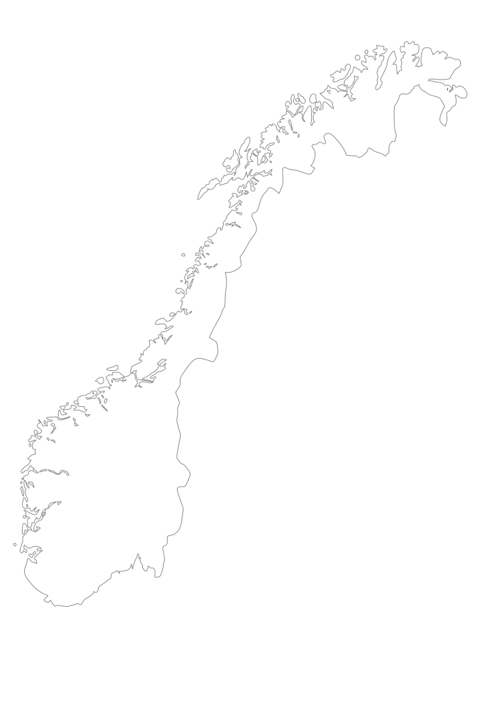

Et studentorchester er en ansamling glade studenter og ikke-studenter som samles for å spille musikk sammen. Vi spiller fordi det er gøy. Mange av de høyere undervisningsinstitusjonene i Norge har tilknyttede studentorchestere.
Klikk på kartet for å få opp informasjon om studentorchestere nær deg.